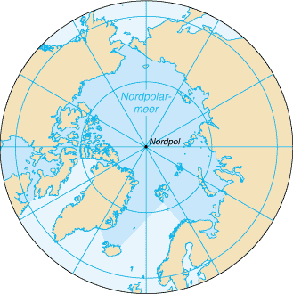

Auf den Punkt
Der Arktische Ozean, auch Nordpolarmeer, Nördliches Eismeer, Arktische See oder kurz Arktik genannt, ist mit 14,09 Millionen km² der kleinste Ozean der Erde. Mit einer durchschnittlichen Wassertiefe von 987 m zählt er zu den flacheren Meeren, seine größte Tiefe beträgt 5669 m.
Ozean Part 1
Der Arktische Ozean, der sich im äußersten Norden der Nordhalbkugel der Erde befindet, liegt zwischen den drei Kontinenten Asien, Europa und Nordamerika. Daher gilt er auch als ein interkontinentales Mittelmeer, obwohl er wissenschaftlich betrachtet einer der fünf Ozeane der Erde ist.
Der Arktische Ozean hat eine Ausdehnung von rund 14,09 Millionen km² und ist großflächig von Eis bedeckt. Dabei nimmt die Eisbedeckung mit den Jahreszeiten zu und ab. Insgesamt hat die Eisfläche seit den 1970er Jahren deutlich abgenommen. Während die spät-sommerliche Eisbedeckung im September in den 1980er Jahren noch zwischen 6 und 7 Millionen km² betrug, beträgt diese in den 2010er Jahren nur noch durchschnittlich 4,13 Millionen km².Mitte September 2020 lag dieser Wert bei 3,8 Millionen km².
Ozean Part 2
Fünf Flüsse, die zu den längsten der Welt gehören, münden in den arktischen Ozean. Auf der euroasiatischen Seite sind das die großen sibirischen Flüsse Ob, Jenissei und Lena, in Nordamerika der Yukon River in Alaska und der kanadische Mackenzie River. Die in den Ozean eingetragene Wassermenge durch die sibirischen Flüsse ist etwa 3-4 mal größer als die der nordamerikanischen Zuflüsse. Die Forscher um Bruce Peterson behaupten,dass die ins Nordpolarmeer gelangte Süßwassermenge von 1936 bis 1999 um etwa 128 km³ bzw. etwa um sieben Prozent zugenommen hat.
Ozean Part 3
Wiederholt in der Erdgeschichte war in Kaltzeiten der Meeresspiegel stark abgesenkt, weil auf den Kontinenten dicke Gletscher lagerten. Bei in den Weltmeeren bis zu 130 m tieferem Wasserspiegel während der Weichsel-Kaltzeit vor 60.000 bis 70.000 Jahren wurden Arktis und Europäisches Nordmeer zu einem „Mittelmeer des Nordens“, stark durch Land umschlossen. Liegt nun ein dicker Panzer aus Gletschereis auf diesem Mittelmeer, reichen bis zu acht Neuntel seiner Dicke unter die Wasseroberfläche und können seichte Verbindungsreste – etwa westlich und östlich von Island – zu umgebenden Meeren verschließen.
Ozean Part 4
Gibt es reichlich Niederschlag auf dem Polareisgletscher, kann er bis zu mehrere hundert Meter Dicke erreichen sowie oben wachsen und unten zugleich durch Erdwärme schmelzen, damit darunter eingeschlossenes Salzwasser verdünnen und dadurch den Wasserkörper binnen weniger tausend Jahre aussüßen. Weiters können nach Norden fließende Flüsse im Sommer Süßwasser einspeisen.
Auf den Punkt Part 2
Der Arktische Ozean wird etwa drei bis fünf Monate im Jahr durch die Schifffahrt genutzt, die Russland in der Nordostpassage und die USA und Kanada in der Nordwestpassage betreiben. Der russische Staat unterhält zu diesem Zweck eine Atomeisbrecherflotte. In geringem Maß finden auch Expeditions-Kreuzfahrten statt.